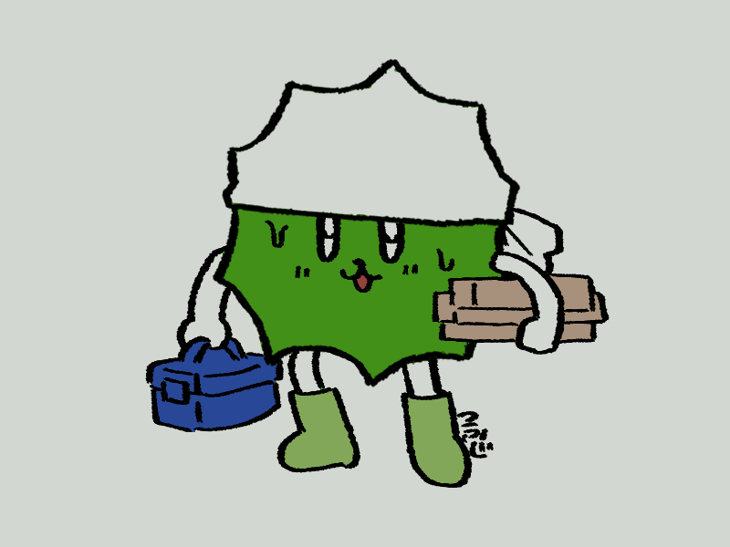

トンテンカンテン

憧れの個人サイトを作り始める。
HTMLとかCSSとか、過去に勉強したからなんとなくわかるけどイチから作ってくのは大変だ…
なんとか調べまくって、少しずつ想像してる形になっていくのは楽しい。
自己開示したがりだけど人に見られてる感にどうも慣れない、
でも手帳に書くアナログな日記はめんどくさいし飽きるし自分の字は汚いしどうも納得できないで続かないので
その中間が欲しかった。キャッチボールは苦手だけどボトルメッセージなら恥も薄れる。
とにかく好きに書いていけたら良いな。
← 日記一覧に戻る